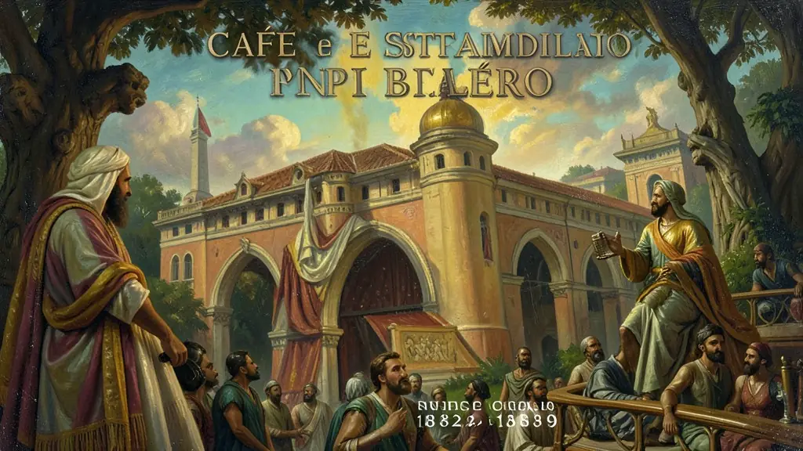

Capítulo 01
1. Constituição de 1824: O Absolutismo Disfarçado
A primeira constituição brasileira foi um documento de contrastes. Enquanto mantinha a religião católica como oficial e o voto censitário (por renda), criava o Poder Moderador. O imperador era 'inviolável e sagrado', acima das leis civis. Isso permitiu a Pedro I mandar e desmandar, gerando fúria nas províncias do Nordeste, que se sentiam asfixiadas pelo centralismo do Rio de Janeiro.
Capítulo 02
2. Período Regencial: O Brasil no Limite
Com a abdicação de D. Pedro I, as regências tentaram governar o Brasil. O 'Ato Adicional de 1834' deu autonomia às províncias, mas isso apenas acelerou as revoltas. Farroupilha e Cabanagem mostravam que o Brasil poderia se tornar cinco ou seis países menores. A criação da Guarda Nacional, controlada pelos fazendeiros (coronéis), foi a resposta das elites para manter a ordem escravocrata enquanto o imperador não podia governar.
Capítulo 03
3. Segundo Reinado: Café e Estabilidade Political
Pedro II reinou por 49 anos. Ele usou o parlamentarismo às avessas para alternar Liberais e Conservadores no poder, sem que houvesse mudança real na estrutura social. Enquanto isso, o café 'marchava' do Vale do Paraíba para o Oeste Paulista, trazendo as primeiras ferrovias e a transição para a mão de obra imigrante europeia, após a pressão britânica pelo fim do tráfico de escravos (Lei Bill Aberdeen/Eusébio de Queirós).

Capítulo 04
4. Guerra do Paraguai: O Início do Fim
O maior conflito da América do Sul (1864-1870) exauriu as finanças do império. O Exército Brasileiro voltou da guerra vitorioso, profissionalizado e repleto de ideais republicanos e positivistas. Ao ver soldados negros lutando bravamente, o Exército passou a questionar a escravidão e o papel passivo da Coroa. O militarismo brasileiro moderno nasce nos campos de batalha do Paraguai e é ele que derrubaria Pedro II.
Capítulo 05
5. A Questão Abolicionista e a Lei Áurea
O abolicionismo foi um movimento intelectual, popular e de pressão externa. Joaquim Nabuco e André Rebouças lideraram a campanha. Cada lei (1850, 1871, 1885) era um degrau para o fim inevitável. Quando a Princesa Isabel assinou a Lei Áurea em 13 de maio de 1888, ela resolveu uma questão humanitária mas destruiu a aliança política da monarquia: os cafeicultores do Vale do Paraíba, que apoiavam o trono, tornaram-se republicanos por vingança pela perda de sua 'propriedade'.
O Segundo Reinado (1840-1889) representou o período de maior estabilidade política do Brasil no século XIX, sob a liderança de D. Pedro II. Após o conturbado período regencial, o 'Golpe da Maioridade' buscou restabelecer a autoridade monárquica e a unidade territorial. O sistema parlamentarista 'às avessas', onde o Imperador detinha o Poder Moderador e escolhia o Primeiro-Ministro, permitiu o revezamento entre liberais e conservadores, mantendo a elite agrária vinculada ao trono e o regime de escravidão africana.
Economicamente, o café tornou-se o principal motor da riqueza nacional, promovendo uma modernização desigual e a penetração do capital inglês no país através de ferrovias e portos. No entanto, a base social do Império começou a ruir na década de 1870, com o surgimento do movimento republicano, a questão religiosa e, principalmente, a questão militar após a Guerra do Paraguai. A abolição da escravidão em 1888, sem indenização aos proprietários de terras, foi o 'suicídio político' da monarquia, isolando o Imperador de sua base tradicional de apoio.
Compreender o Segundo Reinado para o Enem exige analisar as contradições entre uma estrutura política aparentemente refinada e uma base socioeconômica baseada na exploração humana. O estudo deste período permite discutir a construção da identidade brasileira, a resistência escrava por meio do abolicionismo e a transição do trabalho compulsório para o trabalho livre imigrante. O Império caiu não por uma revolução popular, mas por um golpe de elite que buscou uma nova forma de manter o poder sob a fachada republicana.
Fonte: FAUSTO, Boris. História do Brasil. São Paulo: EDUSP, 2013.
Atividades interativas
Questões para fixar
O Poder Moderador, instituído pela Constituição de 1824, permitia ao Imperador do Brasil:
Diferente da maioria dos países hispano-americanos, o Brasil manteve sua integridade territorial após a independência. Isso é atribuído principalmente a:
Qual foi o principal motivo que levou D. Pedro I a outorgar a Constituição de 1824?
Qual foi o evento que marcou o início do Segundo Reinado no Brasil?
Qual foi a principal consequência da Lei Áurea para a monarquia brasileira?